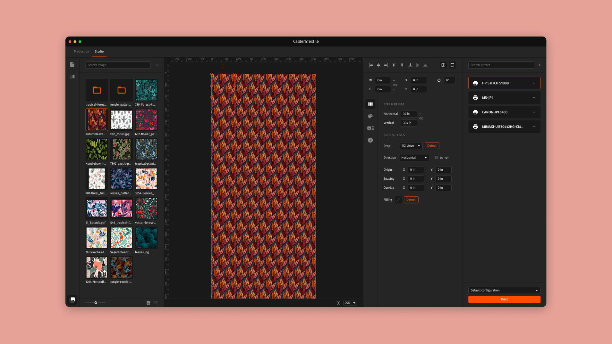

Increase customer acquisition with a new product created for a vertical approach
Problem statement
After twenty years of growth, the inkjet printing market has now reached maturity and is only showing annual growth between 2 and 5%. Caldera must renew itself, and decides to target the emerging textile printing market.
The CalderaRIP application already has useful functionalities for textile printing, but these are lost in a complex interface offering a wide range of actions intended to cover the needs of different types of users. This abundance complicates the use of the product and makes it always more difficult to understand for new users and unconfirmed users. Besides, it’s now tricky
to add new functionalities, while it’s still important to continue to innovate because this new field presents different needs.
In this context, the need for a prepress product dedicated to this market arises, the aim being first to cover the main tasks such as printing a pattern on a complete roll and samples intended to validate customer orders.
The user stories
As a print operator, I want to fill a complete roll with a chosen pattern in a few steps, in order to be more productive.
As a prepress operator, I want to export samples or a pattern ready to be printed, so that I can process more orders.
Workshop facilitation
At the early stage of the project, I suggested to facilitate a workshop with all the members of the R&D department, to discuss about the structure of the application, so that everyone can feel involved in this creation of new product. It helped for diverging as we generated a lot of different ideas, and I was also able to get valuable information on textile printing from backend developpers who have been working on CalderaRIP for years.
Research and ideation
Following this workshop and based on joint work, I converged using the information collected and the ideas that would best fit this project from my point of view.
This helped me to identify a solution, and I decided to opt for a separation of the product into 2 distinct modes: production and studio. Production mode would be used for filling a roll, easy to understand with only the settings of the pattern. Studio mode would be used for samples and more complex cases (2 patterns on the same roll for example).
All of this research approach was carried out with the understanding that the application should serve as a starting point for our next products, by operating with reusable components.
Also, in order to decide whether the prepress and printing parts should be separated into 2 dedicated applications or not, I associated the workflow of a print shop with personas and products.
Prototype
I prepared wireframes for each page necessary for this concept, in order to verify that it’s functional and responds correctly to user stories. Then, I set up a prototype from these wireframes, this one being intended to be added to the documentation for the team. Using this tool, I got quick feedback from the product owner, who gave me additional information that helped me refine the solution.
High fidelity mockups
In addition to the main high-fidelity mockup, I declined the screens that I found important for documentation within the team, particularly the difference between production mode and studio mode.
Outcome
Production mode has been well received by users because its use is simple and fast. In the medium term, it’s planned to add a similar mode dedicated to creating samples. From the technical point of view, the components developed have already been used on another product.